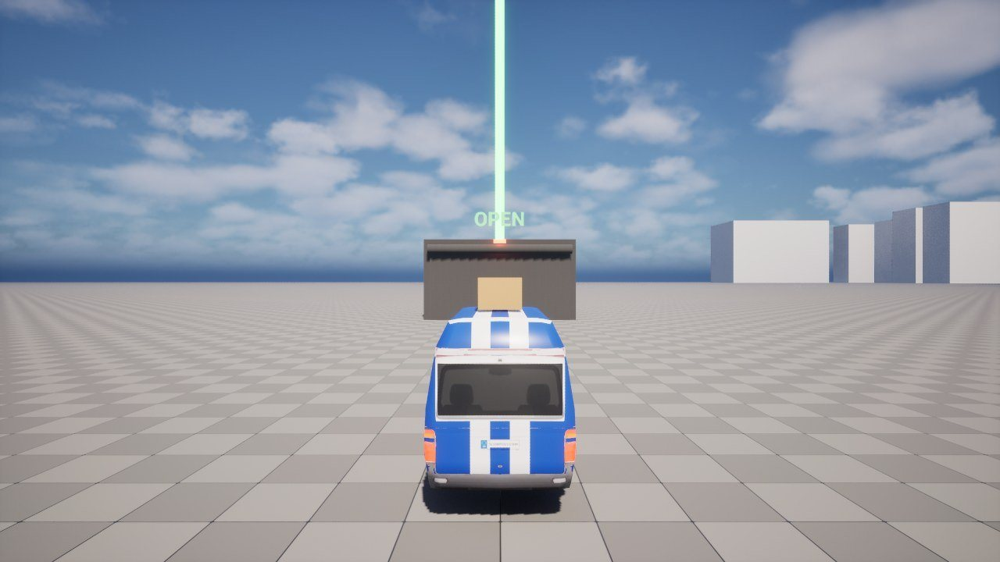
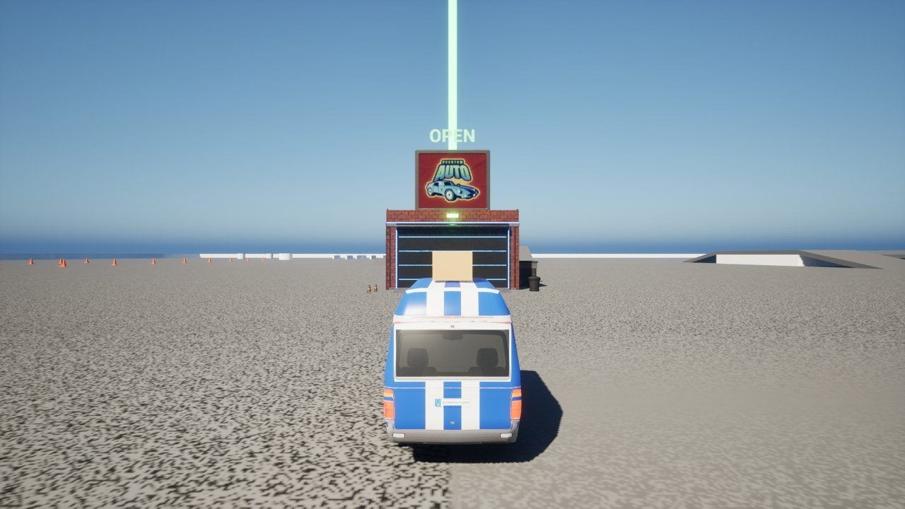
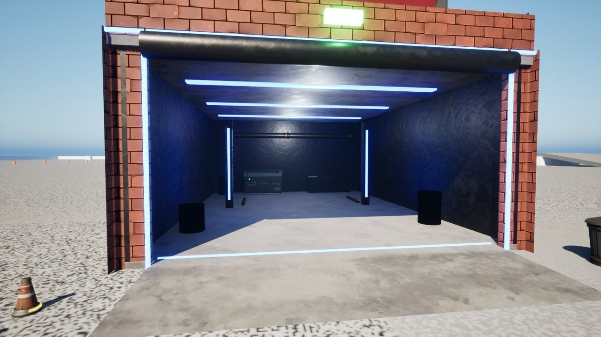
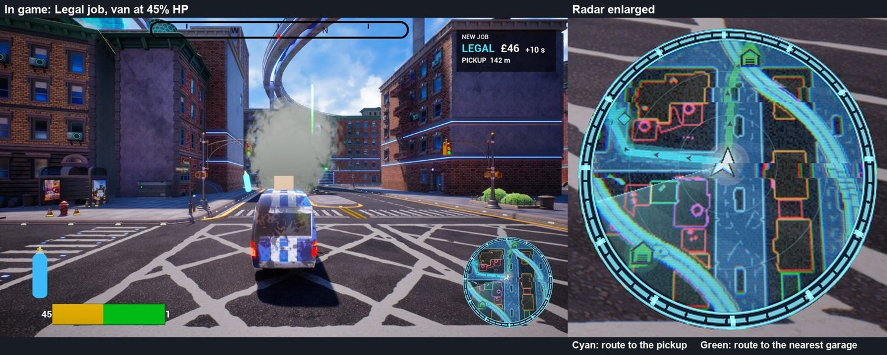
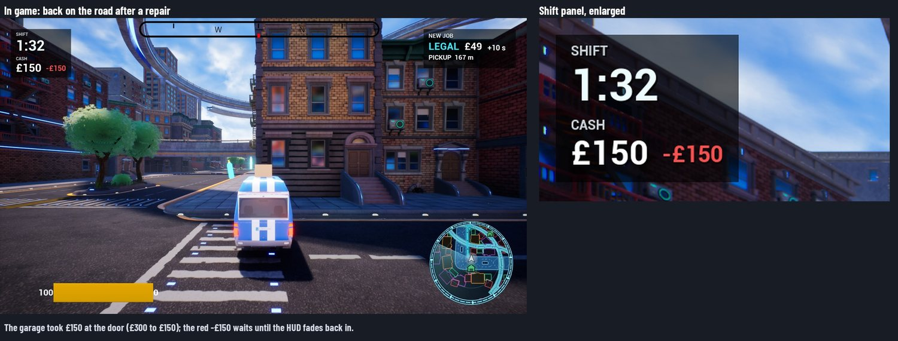

The courier pulls into an open repair garage, smoking, with the green OPEN lamp lit
Every car has health that crashes take away, damage that shows on the car itself, a wreck that ends a chase, and a garage where the van can be repaired. Damage is how the police win a chase by force, and the garage is the van's way back, so both had to be fair, readable from a distance and the same on every screen.
Everything in the build
Feature
What it does for play
Health (HP)
Both cars start with HP from the tuning sheet; only the server changes it
Crash damage
HP lost depends on the speed a crash knocks off the car
Damage cap
One crash never takes more than 20 HP
Dents and bumpers
The body dents where each hit lands; bumpers hang, then fall off
Smoke and fire
Bonnet smoke from 10% damage, thicker as HP falls; fire below 20% HP
The wreck
An explosion, the car thrown up and stopped, then a burnt-out shell
Repair garage
A hidden garage repairs the van fully in a short cutscene
Burst tyres
Stay burst, with half the grip, until a garage fixes them
How the wreck and garage work
The wreck is the big moment of a chase, and both teams can see it coming. Smoke tells the cops there is a target to finish off and tells the courier to slow down and repair. A health bar cannot do that at a distance. At 0 HP the car explodes, is thrown up and grinds to a stop on the same physics frame on every screen. Throttle, nitro, the net and reset all stop working, so a wreck cannot be driven or reset away. A player who joins later sees the burnt-out shell without the explosion.
The garage visit has five steps:
The courier pulls up to the open garage under 40 km/h with a damaged van and enough cash (£150).
The roller door opens and the game drives the van in.
The HUD fades and letterbox bars appear; the camera pans across the street for 5 s while welding glow spills under the door.
The van is driven back out at full health, with wheelspin.
The garage cools down for 60 s, with a countdown on its OPEN sign.
Two garages open each match, chosen at random from those Dafydd places. Only the courier sees which: a green beam, the OPEN sign and a green lamp. Abdullah found the door, air tool, welding and tyre sounds on Freesound. Garages also fix burst tyres, which now stay burst until then.
From the build


Before and after: the first grey blockout garage with the courier-only beam (left) and the garage built from the city pack (right)

Inside the garage: lit ceiling strips, the lift, tyres and a bench

A van at 45% HP smoking from the bonnet, with the radar routing it to the nearest garage

Back on the road after a repair: the garage has taken £150 from the van's cash
Damage was tested with a server and two players on one PC. A server-only test drove the van into a wall and the cop into the van at set speeds. Both players' logs showed the server's HP after every hit. Every dent landed in the same place on both screens. The van, wrecked at 60 km/h, stopped within 2.2 m. Abdullah tested the garage in the sandbox: at full HP the door stays shut, and at 60 HP the van is driven in, repaired and sent back out.
Wiki / Behind the design / Wrecks & the repair garage
Behind the design
Why wrecks
Built 24 Oct to 9 Nov 2026 · Who Abdullah (code, art and design calls, testing), Dafydd (numbers)
What we set out to do
Pre-production named the damage numbers (health, multipliers, a scrape threshold) and three visible damage stages, but not how a crash becomes lost health. It also had no repairs: an in-match shop had been rejected because it stops the chase. We needed a damage rule one person could tune, a wreck both teams could see coming, and a way back from damage that keeps the chase moving.
The big decisions
Full comparison: Trade-off Appendix.
Option
Pros
Cons
Verdict
Damage from speed lost in the crash
Same rule for the heavy van and light police car; one number to tune
A heavy car is not punished for its weight
Chosen
Damage from the size of the hit
Physically real
Grows with weight, so each car needs its own tuning
Rejected
Each PC works out its own damage
Instant
Screens disagree about wrecks; a modified game could ignore damage
Rejected
Damage decides wrecks, and wrecks decide the match, so only the server works it out. Using speed lost means Dafydd tunes one value (damage per km/h) for both cars. A cop hitting the van does 1.5 times as much, and walls do 1 times.
Option
Pros
Cons
Verdict
A garage on the map, one of several, shown only to the courier
A risky detour; cannot be camped
Garages to place in every level
Chosen
An in-match shop
More choices
Stops the chase
Rejected in pre-production
No repairs
Simple
Cars wreck with no way back
Rejected
The garage replaced the shop idea in a form that keeps the chase going. The game drives the van in and out, which makes a cinematic moment and stops the courier hovering in the doorway as a shield. Abdullah searched Fab for a garage in the game's style, found none, and had it built from the city pack's own pieces so it matches the street.
Playtesting and what changed
Date
Who played
What they found
What we changed
24 Oct
Abdullah, editor test
The wreck was "very underwhelming, no smoke"
Smoke, fire and explosion rebuilt as puffs moved in code, at any size
24 Oct
Abdullah
Smoke streamed back into the driver's camera
Smoke follows the car and fades near any camera
25 Oct
Abdullah
Cars got "absolutely wrecked with like one or 2 hits"
Damage per km/h lowered and a 20 HP cap per crash
25 Oct
Abdullah
Police should be able to have far more HP than the van
HP can go up to 1000 per car
27 Oct
Abdullah
The garage route vanished whenever a parcel was on board
Both routes show at once (see the HUD chapter)
30 Oct
Uni playtest, written up by Abdullah
Cops nearby kept the garage shut, then could follow the van in
Cops-near rule removed; an unseen doorway wall keeps cops out
Dafydd's sheet values that arrived with the playtest fixes set the van's health to 250. The balance pass shows the effect of the cap and the lower rate on the same server crash test:
Wall hit
HP lost before
HP lost after
20 km/h
7.6
4.8
60 km/h
25.7
18.5
100 km/h
51.6
20
Cop T-bone, 70 km/h
24.1
15.7
Removing the cops-near rule was Abdullah's call: the garage should be somewhere to run to in the middle of a chase. The doorway wall and a 3 s grace after the van leaves stop the cops ramming it straight back in.
Problems and fixes
Problem
Cause
Fix
No crash reached the car at all
Removing the wheels' extra physics bodies also took the car off the hit list
Sign the car up for hits again straight after
Only one of three close hits dented
Only the last hit's position was sent
Send the last six hits with the health
A grey box poked through the police car's dents
The model has parts inside its shell
Dent the body as columns, not panels
Soot vanished once a car was dented
Editable meshes draw no overlay material
Each dented car carries a soot twin
The van stopped inside the garage with the controls locked
The physics engine put the still car to sleep, so the drive-out never ran
Cars a garage holds are kept awake on every PC
Lessons
Send a short list of recent events with the state, not just the last one, or close events get lost.
Effects that must read at a distance should be built to scale, not borrowed from small exhaust and tyre effects.
Cap any value that grows with speed, so one extreme moment cannot end the round.
Latest
Date
What changed
Why
30 Oct 2026
Cops nearby no longer stop a repair; doorway wall added
The garage should be an escape mid-chase
30 Oct 2026
Garage shows on the radar only once the van is damaged
Playtest list: show the garage only once damaged
8 Nov 2026
Burst tyres look burst, keep half grip and last until a garage
The handling change was too small to feel
9 Nov 2026
TYRES BURST! and RUN-FLATS HELD banners for the van
The courier must know what happened and what to do
 Shady Shipping
Shady Shipping